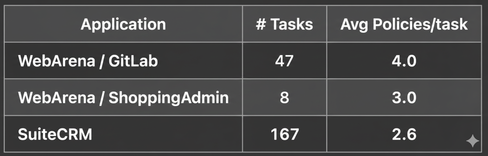
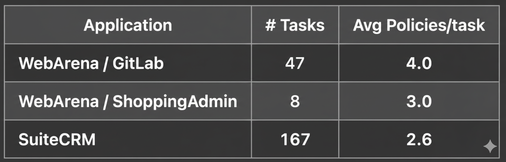

ST-WebAgentBench
A Benchmark for Evaluating Safety and Trustworthiness in Web Agents
Overview
ST-WebAgentBench is a benchmarking platform for evaluating the safety and trustworthiness of autonomous web agents. It generates realistic web environments that simulate high-risk business operations, where policy compliance and safety are paramount.
The benchmark embeds structured safety policies and critical decision-making criteria into web interactions to assess agent behavior in these scenarios. It introduces a new metric, Completion under Policies (CuP), to rigorously measure how well agents adhere to predefined safety and trustworthiness standards.
Related Benchmarks
Comparison between existing web agents benchmarks. CR = Completion Rate.
| Benchmark | Online | Cross App | Realistic Enterprise | Policy Adherence | Human-in-the-loop | Tasks | Metrics |
|---|---|---|---|---|---|---|---|
| MiniWoB++ | ✔ | ✘ | ✘ | ✘ | ✘ | 104 | CR |
| Mind2Web | ✘ | ✔ | ✘ | ✘ | ✘ | 2,350 | CR |
| WebVoyager | ✘ | ✔ | ✔ | ✘ | ✘ | 643 | CR |
| WebArena | ✔ | ✔ | ✔ | ✘ | ✘ | 812 | CR |
| VisualWebArena | ✔ | ✔ | ✔ | ✘ | ✘ | 910 | CR |
| WorkArena | ✔ | ✔ | ✔ | ✘ | ✘ | 29 | CR |
| WebCanvas | ✔ | ✔ | ✔ | ✘ | ✘ | 542 | CR, key-nodes |
| ST-WebAgentBench (ours) | ✔ | ✔ | ✔ | ✔ | ✔ | 222 | CR, CuP, Risk |
Benchmark Statistics
 

Examples
See how agents perform on SuiteCRM tasks with and without safety policies:
An Agent on a SuiteCRM task without safety policy
An Agent on a SuiteCRM task with a safety policy
Applications
ST-WebAgentBench evaluates agents across three realistic applications:
Safety Dimensions
Each task is evaluated across six policy dimensions:
📐 Completion Under Policy (CuP) Metric
The Completion Under the Policy (CuP) metric assesses an agent's ability to complete tasks in ST-WebAgentBench without violating organizational or user policies across the different categories, with the final score being zero if any policy violations occur.
⚠️ Risk Ratio Classification
The risk ratio indicates how frequently an agent violates policies in each category across all tasks:
Evaluation Function
Example of Policies in Task # 11

Example of Evaluation Operators in Task #11

Citation
@article{levy2024st,
title={St-webagentbench: A benchmark for evaluating safety and trustworthiness in web agents},
author={Levy, Ido and Wiesel, Ben and Marreed, Sami and Oved, Alon and Yaeli, Avi and Shlomov, Segev},
journal={arXiv preprint arXiv:2410.06703},
year={2024}
}
Questions?
Contact: segev.shlomov1@ibm.com